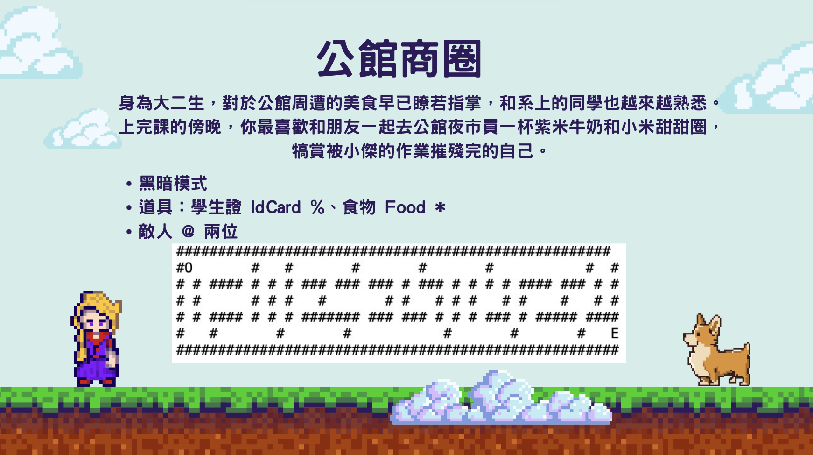
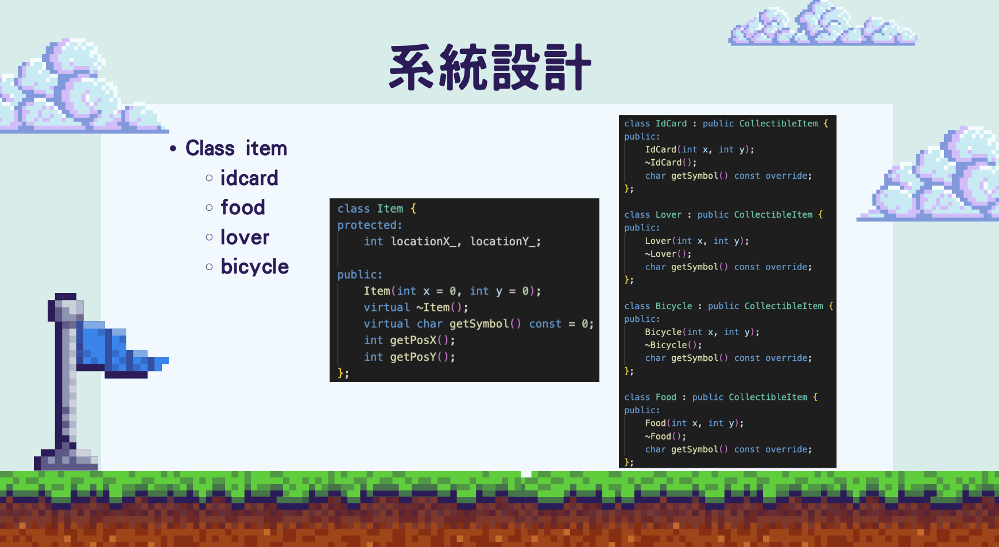

P08 / 團隊課程作品
YOUR LIFE IN NTU IM：C++ 終端機遊戲
參與以臺大資管生活為主題的終端機迷宮遊戲，將學分、GPA、道具與關卡轉成互動規則。
我的角色程式設計課程團隊成員
期間2024 Fall

YOUR LIFE IN NTU IM：終端機迷宮遊戲。
01
作品
玩家透過鍵盤移動，在迷宮中收集學分與道具，並避開敵人。團隊以角色、物品與遊戲狀態等類別組織程式，處理關卡、碰撞與不同結局。簡報記錄了 Mac 與 Windows 輸入行為差異帶來的相容性問題。
02
我的貢獻
我是課程團隊成員；目前文件足以支持作品內容與團隊實作，但沒有清楚指出我負責哪些類別或模組，因此不將整個遊戲或所有物件導向設計歸為個人成果。未驗證公開可執行下載與現行作業系統支援。
SELECTED EVIDENCE
精選簡報與 Demo



